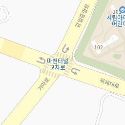
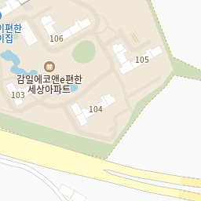
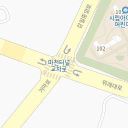
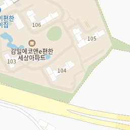
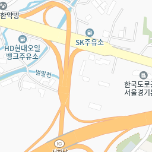
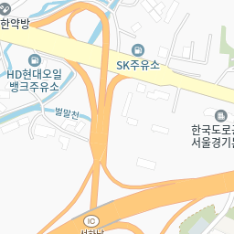

하루가 다르게 성장하는 아이들,
유치부터 영구치까지 바르게 치료하는
“ 대한민국
치과의사의 2%
소아치과전문의가
직접진료 ”
“우리아이에게 꼭 필요한 진료만을 하겠습니다!”
대표원장 조재현
진료문의
02-473-2841하루가 다르게 성장하는 아이들,
유치부터 영구치까지 바르게 치료하는
“ 대한민국
치과의사의 2%
소아치과전문의가
직접진료 ”
“우리아이에게 꼭 필요한 진료만을 하겠습니다!”
대표원장 조재현
우리아이 첫 치과
편안하고 즐거운 감일어린이치과


가장 우수한 충치예방효과를 가진 불소 바니쉬를 이용합니다. 도포주기는 연 2~4회(3개월~6개월 주기)가 일반적이며 우식위험도가 높거나 제1대구치 맹출 시기에는 3개월에 한 번 도포하는 것을 권장합니다.
경사가 깊고 울퉁불퉁한 치아의
홈을 메워주어 충치의 발생을 막습니다.
아이의 치아는 연약할 뿐 아니라 성인에 비해 유기질이 많이 포함되어 있어
충치가 쉽게 발생할 수 있고 악화되는 속도 또한 매우 빠릅니다.
유치에 충치가 생긴 경우라 할지라도 치료를 진행하고 잘 관리해야
건강한 영구치가 맹출할 수 있습니다.
본인부담금 30% ”
5
2
8
4
소아진정요법
치과진료에 대한 공포심이 큰 아이들에게 선택적으로 진행하는 ‘진정요법’
안전하고 편안하게 치과치료 받을 수 있는 방법 없을까요?의식이 유지되는 안정적인 상태로
두려움 없이 끝나는 치과치료
웃음가스치료
-
편안한 물론, 치과진료에 대한
긍정적인 기억이 형성될 수 있습니다.
임상경험으로 증명 받은
안전한 약물을 활용한
진정약물치료
-
안전성이 입증된 약물을 사용하여
경미한 수면 상태에서 치료를 진행합니다.
Q .웃음가스가 체내에 남지는 않나요?
A .치료가 끝날 시기에 맞춰 산소를 공급하여 100% 배출되기 때문에 체내에 전혀 남지 않습니다.
Q .원장님의 진정약물(수면)치료경험은 얼마나 되시나요?
A .감일어린이치과 조재현원장님께서는 2021년4월26일 현재 5140회의 수면치료경력을 가지고 계십니다.
바른치열은 물론
바른 악골성장까지
성장기 치아교정
발생 즉시
치료해야 합니다!
치아외상치료
매복 과잉치의 경우 만 6-7세경 영구전치의 치근이 1/3~1/2 정도 형성되었을 때
발치하는 것이 좋지만 과잉치 주위에 낭종이 형성되거나 과잉치에 의해
영구치의 위치가 정상에서 많이 벗어나 있는 경우 조기에 수술해야하는 경우도 있습니다.
국가지정 구강검진병원
‘영유아 구강검진’
유치원 구강검진
학교 구강검진
경기도치과주치의사업
.png) 
.png)
.png)
.png) 
.png)
.png)
.png)